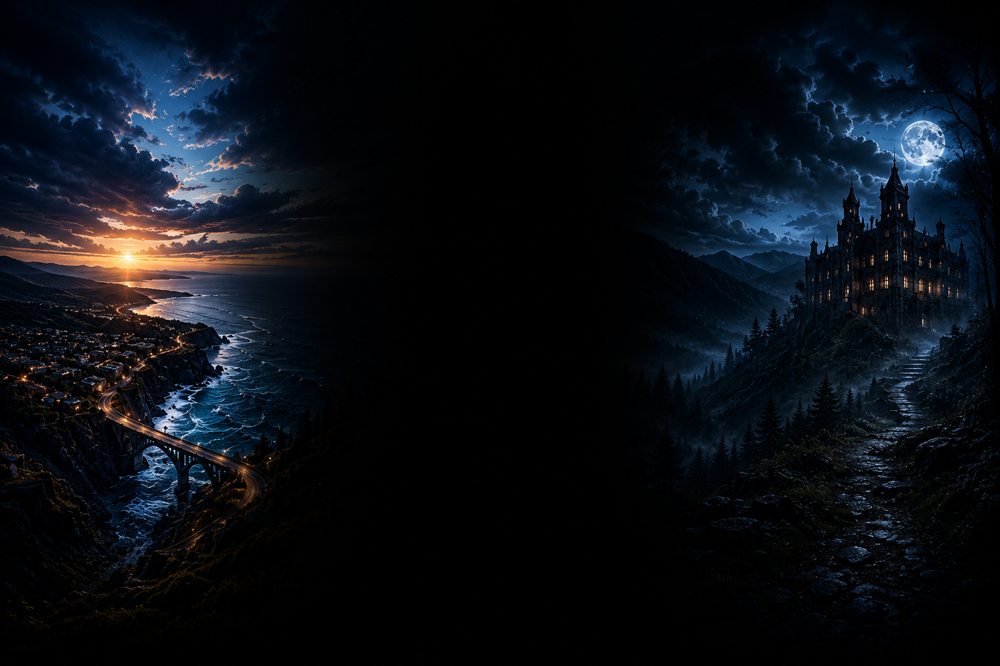

01 • SKYLINE MEDIA
NEWITT Skyline Media
Aerial photography and cinematic drone footage, capturing landscapes, locations and stories from above.
Explore Skyline Media →NEWITT MEDIA
Skyline media. Paranormal adventures. Photography. One creative world.
WELCOME TO NEWITT MEDIA
NEWITT Media brings together aerial cinematography, paranormal investigations and photography under one independent creative brand.
01 • SKYLINE MEDIA
Aerial photography and cinematic drone footage, capturing landscapes, locations and stories from above.
Explore Skyline Media →02 • PARANORMAL
Investigations, haunted locations, unexplained activity and the search for answers beyond the ordinary.
Enter Paranormal Adventures →03 • PHOTOGRAPHY
Professional photography covering landscapes, events, locations, people and moments worth remembering.
Explore Photography →ABOVE THE ORDINARY
NEWITT Skyline Media combines drone technology with cinematic composition to create striking aerial photography and video.
View Skyline Media
AFTER DARK
Follow NEWITT's Paranormal Adventures as investigations take us into locations surrounded by history, mystery and unexplained reports.
Explore ParanormalTHROUGH THE LENS
From landscapes and locations to events and people, NEWITT Media Photography is about capturing the details that make a moment memorable.
View PhotographyNEWITT MEDIA
Get in touch and let's create something worth seeing.
Contact NEWITT Media